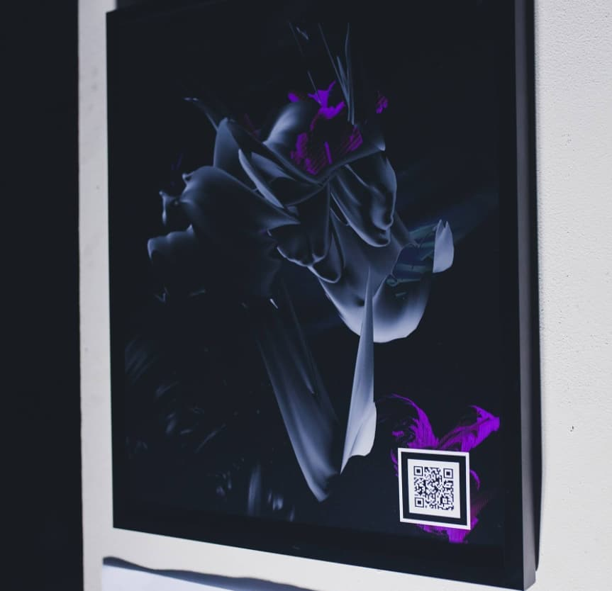
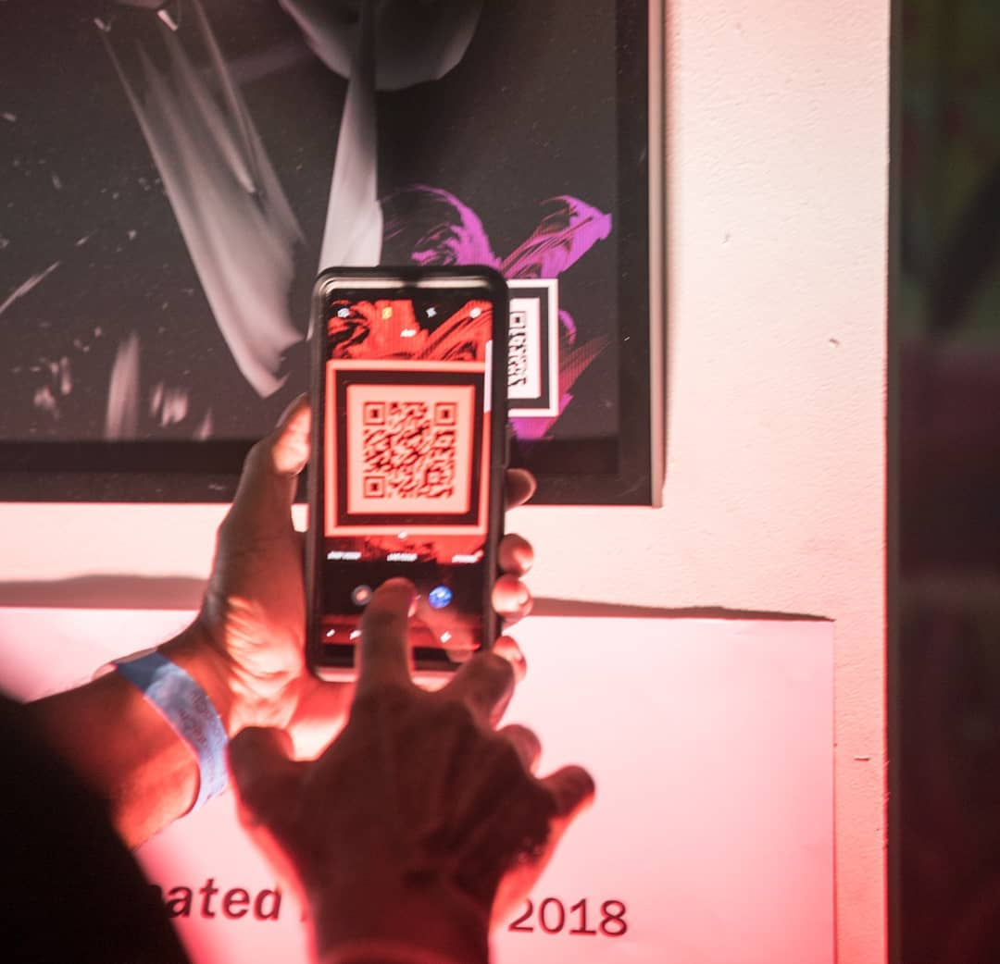
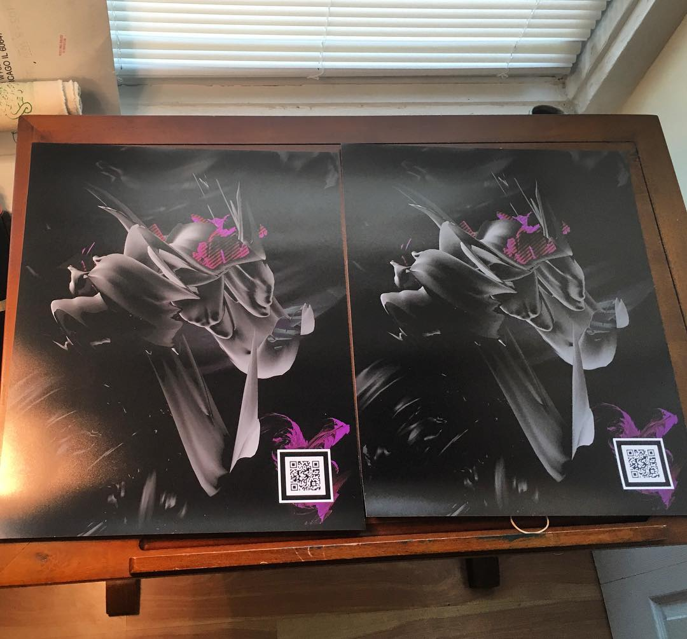

<div class="content"><div class="content__details"><h1 class="content__title">A-frame Poster (2018)</h1><h2 class="content__description">WebVR, Cinema4d, GLSL</h2><div class="content__p">I wanted to try out A-frame so I made some twisted 3d abstract models in cinema4d
and threw them into an A-frame scene. I also made a composition with the models in photoshop
and added a QR code that opens up the WebVR website, which adds another dimensional layer
to the composition.</div><div class="content__p"><p>In Neal Stephenson’s 1995 sci-fi novel The Diamond Age, Stephenson describes the futuristic
concept of a blank piece of a paper generating animated colors, logos, and music as it is unfolds
(7): “The banker reached inside his jacket and withdrew a piece of paper, folded in thirds, from his breast pocket….
As Bud took it from the banker’s hand, the blank page generated a nice animated color logo and music. The logo
developed into a peacock. Beneath it, a video presentation commenced, hosted by a similar-looking gent…
“‘The Parsis welcome you to Peacock Bank,’” he said.</p><p>This piece attempts to create a rudimentary version of Stephenson’s idea of animated paper.
The smartphone, a device that is always available on our body, is used to scan a QR code,
extending the experience of the 2D poster to a web-based virtual 3D reinterpretation.</p><p>Instructions:
iOS 11: Scan the QR code with your phone’s camera app or download a QR code scanner from app store to open the website
Android: Use Google Lens or download a QR code scanner app to open the website.</p></div><a class="content__back" href="./../index.html">⍣back--></a></div></div>